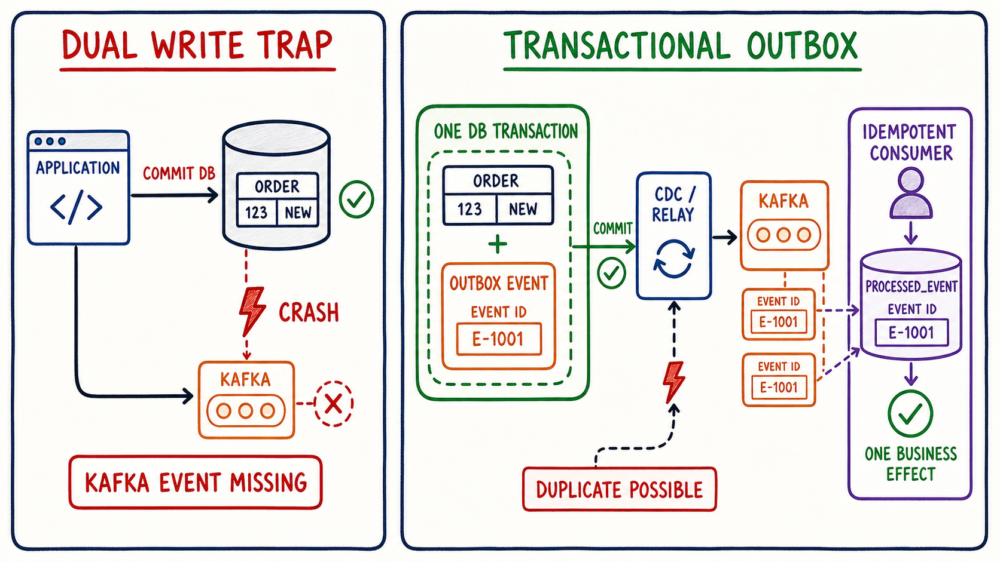

Dual-write
Chỉ ra inconsistency ở cả DB-first và Kafka-first.
Business row và outbox event cùng commit trong một database transaction. Relay publish bất đồng bộ có thể tạo duplicate, nên consumer dùng event ID và unique constraint để biến lần xử lý lại thành no-op.
Chỉ ra inconsistency ở cả DB-first và Kafka-first.
Commit business row và event intent trong cùng DB transaction.
Chấp nhận at-least-once publish và giữ event ID ổn định.
Dedup marker và business effect cùng DB transaction.

orders và outbox_event dùng cùng datasource/DB transaction.
CDC hoặc poller lấy outbox row và publish sau commit.
processed_event và projection/business update commit cùng nhau.
Chọn chiến lược. Mặc định crash xảy ra sau durable write đầu tiên.
Sau crash, order và event intent có cùng tồn tại không?
Poller publish event E-1001, crash trước khi mark sent; lease hết hạn và instance mới publish lại.
Relay không thể atomically “publish Kafka + mark DB sent”. Consumer sẽ thấy gì?
Cả ba cách đều dùng event ID, nhưng chỉ một cách chịu được crash ở giữa.
Marker và effect cuối cùng có khớp nhau không?
Mô phỏng mapping mặc định của Debezium Outbox Event Router. Topic naming có thể cấu hình.
SKIP LOCKED khi scale.| CDC / Debezium | Polling | |
|---|---|---|
| Trigger | Đọc database transaction log/WAL. | Query rows theo lịch. |
| Outbox mutation | Insert-centric; SMT kỳ vọng INSERT. | Thường có READY/IN_PROGRESS/PUBLISHED hoặc lease. |
| Latency/load | Thấp, ít query workload. | Phụ thuộc poll interval/batch/index. |
| Failure concern | Connector offsets, WAL retention, schema/config. | Claim races, stuck lease, duplicate publish, cleanup. |
public record OutboxEvent(
UUID id,
String aggregateType,
String aggregateId,
String type,
String payload
) {
public OutboxEvent {
// TODO: validate id, aggregateType/id, type, payload
}
}OutboxEvent stored = repository.findById(outboxId);
producer.send(toKafkaRecord(stored));
// crash...
OutboxEvent retried = repository.findById(outboxId);
assert retried.id().equals(stored.id());public record DedupKey(String consumerName, UUID eventId) {
public DedupKey {
// TODO: non-blank consumerName và non-null eventId
}
}@Test void retryKeepsSameEventId() { // TODO }
@Test void sameAggregateBecomesSameKafkaKey() { // TODO }
@Test void twoConsumersMayProcessSameEventIndependently() { // TODO }
@Test void sameConsumerRejectsDuplicateEventId() { // TODO }create table orders (
id uuid primary key,
status varchar(40) not null,
total numeric(19,2) not null
);
create table outbox_event (
id uuid primary key,
aggregatetype varchar(255) not null,
aggregateid varchar(255) not null,
type varchar(255) not null,
payload jsonb not null,
created_at timestamptz not null default now()
);
create index outbox_event_created_idx on outbox_event(created_at);@Transactional
public UUID placeOrder(PlaceOrder command) {
UUID orderId = UUID.randomUUID();
UUID eventId = UUID.randomUUID();
orderRepository.save(Order.pending(orderId, command.total()));
String payload = serializeOrThrow(
new OrderPlaced(eventId, orderId, command.total()));
outboxRepository.save(new OutboxEventEntity(
eventId, "order", orderId.toString(), "OrderPlaced", payload));
// TODO: return orderId; không kafkaTemplate.send(...)
}serializeOrThrow nên wrap lỗi thành RuntimeException hoặc cấu hình rollback rule. Spring mặc định rollback RuntimeException/Error, không mặc định rollback checked exception.
Inject failure sau orderRepository.save nhưng trước outbox save. Sau rollback: order rows = 0, outbox rows = 0.
Sau success: đúng một order và một outbox row có cùng aggregate ID; event ID không đổi qua mọi relay attempt.
transforms=outbox
transforms.outbox.type=io.debezium.transforms.outbox.EventRouter
transforms.outbox.route.by.field=aggregatetype
transforms.outbox.route.topic.replacement=outbox.event.${routedByValue}
transforms.outbox.table.field.event.id=id
transforms.outbox.table.field.event.key=aggregateid
transforms.outbox.table.field.event.payload=payloadÁp dụng SMT có chọn lọc cho outbox table. Mặc định event ID đi vào header id, aggregate ID làm Kafka key.
// TODO conceptual flow:
// 1. claim READY rows -> IN_PROGRESS + lease_until
// 2. publish using stored event id
// 3. mark PUBLISHED only after broker ack
// 4. expired lease -> another worker retries same event idĐừng giữ lời hứa exactly-once. Crash sau broker ack trước DB mark vẫn tạo duplicate.
create table processed_event (
consumer_name varchar(120) not null,
event_id uuid not null,
processed_at timestamptz not null default now(),
primary key (consumer_name, event_id)
);insert into processed_event(consumer_name, event_id)
values (:consumerName, :eventId)
on conflict (consumer_name, event_id) do nothing;JDBC update count 1 = lần đầu; 0 = duplicate. Unique constraint xử lý race giữa consumer instances.
@Transactional
public void apply(OrderPlaced event) {
int inserted = processedEventRepository.tryInsert(
"shipment-projection-v1", event.eventId());
if (inserted == 0) return;
shipmentRepository.createFor(event.orderId());
// TODO: cả marker và shipment cùng datasource/transaction
}@KafkaListener(topics = "outbox.event.order")
void consume(OrderPlaced event) {
projectionService.apply(event);
}Nếu transaction throw, marker và business effect rollback; Kafka offset không được xem là hoàn tất theo error/ack policy.
Nếu consumer gọi payment/email HTTP, DB marker không thể rollback remote effect. Dùng idempotency key phía provider hoặc ghi một outbox mới cho bước tiếp theo.
Throw sau order save trước outbox save. Mong đợi: cả hai bảng 0 rows.
Dừng Kafka/connector sau source commit. Order và outbox vẫn tồn tại; khi relay hồi phục event mới xuất hiện.
Poller không mark sent rồi restart. Mong đợi: hai deliveries có cùng event ID.
Trên dữ liệu lab mới, tạm bỏ guard. Hai deliveries tạo hai business effects—ghi bằng chứng rồi khôi phục.
Bật PK + transaction. Hai deliveries tạo một processed row và một business row.
Throw sau tryInsert trước business write. Transaction rollback cả hai; redelivery sau đó áp dụng thành công đúng một lần.
Gửi OrderPlaced rồi OrderCancelled cho cùng aggregate ID. Xác nhận Kafka key giống nhau và consumer quan sát đúng order per partition.
Định nghĩa retention/cleanup outbox và processed_event, lag/age alert, replay ownership, schema migration và PII policy.
order/outbox counts, same aggregateId, eventId, DB commit.
connector/poller offset, publish attempts, Kafka metadata, outbox age.
delivery count, processed marker count, business row/version.
Kể câu chuyện E-1001 qua source DB, relay, Kafka, duplicate delivery và destination DB.